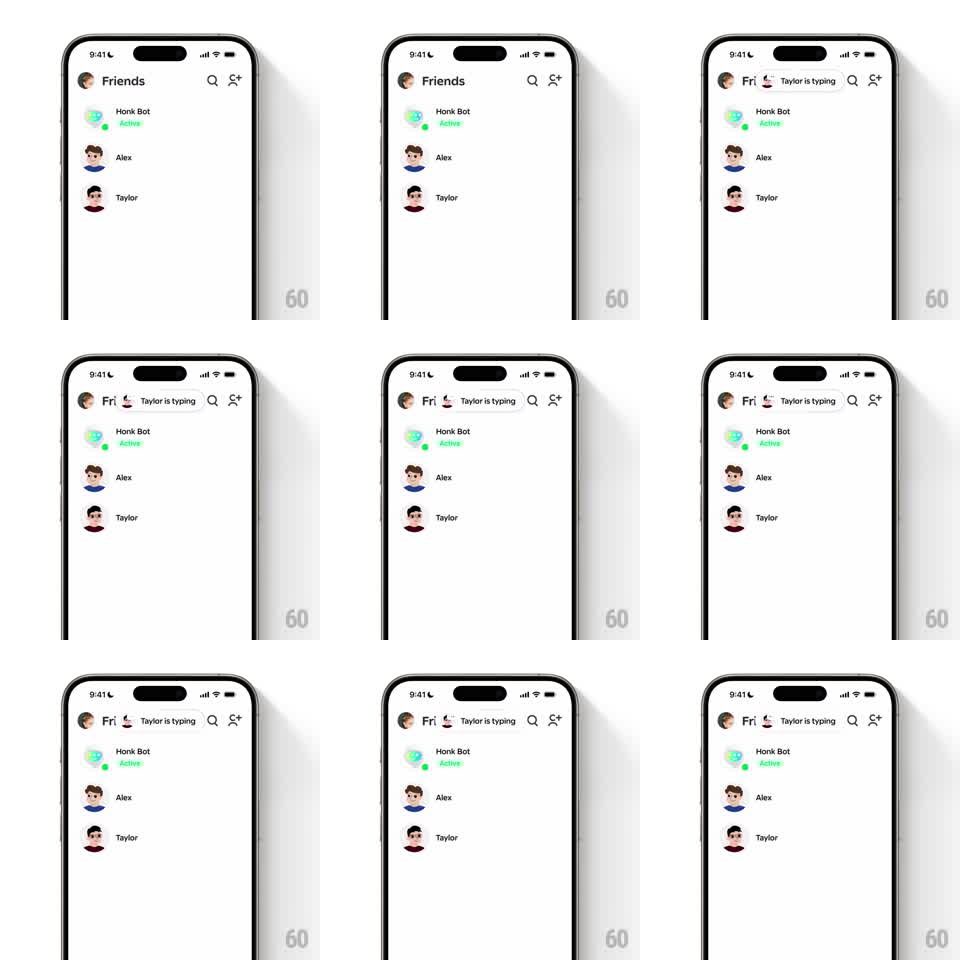

Media
Frame-by-frame

Rebuild this interaction 1:1: Honk's typing pill - when a friend starts typing, a pill with their avatar and "Taylor is typing" slides into the Friends header from the right, springing in and masking the title down to a clipped "Fri...".

Rebuild this interaction 1:1: Honk's typing pill - when a friend starts typing, a pill with their avatar and "Taylor is typing" slides into the Friends header from the right, springing in and masking the title down to a clipped "Fri...".
## Integration
Integration: stack-agnostic spec - springs given as stiffness/damping, timed motions as duration + curve; map every value to your framework and animation library of choice.
## Scene
Friends list screen: header with "Friends" title and search / add-friend icons at right; rows for Honk Bot (Active, green), Alex, Taylor. During typing, a white rounded pill carrying Taylor's avatar, a small red badge, and "Taylor is typing" occupies the header center, the title compressed behind it.
## Motion spec
Pattern: spring-loaded pill sliding into a collapsing title.
- Typing starts: the pill slides in from the right edge of the title area (spring ~340/18, 350ms), its content (avatar, badge, text) fading in with a 60ms lag.
- The "Friends" title compresses in place: its container shrinks with a mask, clipping the text ("Friends" -> "Fri...") rather than resizing the type; the header icons shift right in the same spring.
- The pill idles with the badge pulsing (scale 1 -> 1.2 -> 1, 1.2s).
- Typing stops: the pill slides back out to the right (spring ~340/20, 300ms) while the title unmasks back to full "Friends" in the same motion.
- List rows below never move - all motion stays inside the header bar.
## Calibration
- The title masks, not truncates: the full text is still laid out, clipped by the shrinking container.
- Pill height matches the title line; avatar inside at ~70% of pill height.
## Reduced motion
Pill fades in/out (200ms); title crossfades to its clipped state.
## Don't miss
- The pill belongs to whoever is typing - avatar and name swap per friend.
- The search and add-friend icons stay tappable and simply translate; they never fade.